神话学引论随笔
这学期选了一门神话学。前五讲大致是这样走的：第一讲问什么是神话，第二讲看闻一多怎样研究神话，第三讲从神话走到社会，读王斯福的《帝国的隐喻》；第四讲到陕北白云山的庙会上看神话怎样被「做」出来，第五讲回到研究者自己，讲田野调查和民族志写作。五讲的落脚点各不相同，但有一个共同的意思：神话从来不只是书里的故事。它刻在砖石上，在庙会上唱出来，在庙里烧成纸钱，也由研究它的学者一遍遍重新写过。
这篇随笔按课件顺序整理各讲的要点，中间夹着我自己的一些想法，并补了一些查到的资料和图片。课件来自梁君健老师的课程，引文和观点出处尽量标明；图片来源列在文末。
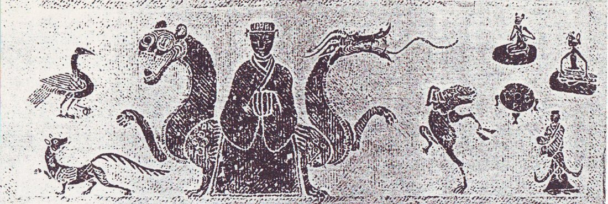
Fig. 1西王母龙虎座图，汉画像石拓片，四川彭山双河崖墓石棺侧面画像。西王母端坐正中，左右是龙与虎，周围有九尾狐、蟾蜍、玉兔、三足乌和执物侍者。§ 01何为神话
1.1 五种定义
课件一开始列了五位学者的定义，放在一起看很有意思：
| 学者 | 定义 | 侧重点 |
|---|---|---|
| 史蒂斯·汤普森（Stith Thompson） | 神话所涉及的是神祇及其活动，是创世以及宇宙和世界的普遍属性。 | 题材：神与创世 |
| 杨利慧 | 神话是有关神祇、始祖、文化英雄或神圣动物及其活动的叙事，它解释宇宙、人类和文化的最初起源，以及现时世间秩序的最初奠定。 | 功能：解释起源、奠定秩序 |
| 茅盾 | 一种流行于上古民间的故事，所叙述者是超乎人类能力以上的神们的行事，虽然荒唐无稽，但古代人民互相传述，却信以为真。 | 时间与信念：上古、信以为真 |
| 袁珂 | 神话是非科学但却联系着科学的幻想的虚构……通过幻想的三棱镜反映现实。 | 认识论：幻想与现实 |
| 鲁迅 | 初民对超于人力以外的现象的自造解释。（《破恶声论》，1908） | 主体：初民的解释 |
汤普森是 AT 故事类型分类法里的那个 T，编过六卷本《民间文学母题索引》。他的定义最窄，只管神与宇宙。杨利慧的定义最像教科书，关键词是「叙事」和「最初」。茅盾和鲁迅都站在 20 世纪初进化论人类学的立场上：神话属于「上古」「初民」，是人类童年的东西。袁珂的「联系着科学的幻想」后面我们还会看到，它是为「广义神话」开路的。
1.2 Mythos 与「神话」
希腊语 mythos 原意就是「话语、故事」。它和 logos 一开始并不是对立的，后来才被分成两种说话方式：
- mythos：讲故事，具体、有情节，用诗的形式，口传心授；
- logos：讲道理，抽象、理论化，用散文形式，以文字流传。
公元前 6 至前 5 世纪，希腊思想经历了所谓「从 mythos 到 logos」的转变（德国古典学家 Wilhelm Nestle 1940 年的书名就是 Vom Mythos zum Logos）：寓言、拟人和诗歌逐渐让位给逻辑、抽象概念、修辞术和哲学。这个叙述本身也是一种神话，因为柏拉图一边驱逐诗人，一边写了大量神话。
中文的「神话」一词则是 19 世纪末从日语「神話（shinwa）」借来的。在此之前，中文里对应的说法是「怪异」「虚妄之言」「神鬼之说」。一般认为，1903 年蒋观云在《新民丛报》发表的《神话历史养成之人物》第一次使用了这个词。他有一段很漂亮的比喻：
古往今来，英雄豪杰，其一言一行，一举一动，即铸成之植字，而留以为后世排列文字之用者也……而荟萃此植字者，于古为神话，于今为历史。神话、历史者，能造成一国之人才。
「植字」就是活字。神话和历史一样是排印一国精神的铅字，这种说法从一开始就把神话放在了民族建构的位置上。第二讲的闻一多会把这条线索推到极致。
1.3 神话的边界
要界定神话，最常引用的是美国民俗学家威廉·巴斯科姆（William Bascom）在《民间文学的形式：散体叙事》（1965）中的三分法：
| 形式 | 时间 | 地点 | 主要角色 | 信实性 | 态度 | 功能 |
|---|---|---|---|---|---|---|
| 神话 | 遥远的过去 | 古时的或另外的世界 | 神祇、始祖、文化英雄、神圣动物 | 被认为是真实的 | 神圣的 | 解释与证明 |
| 传说 | 不久的过去 | 今天的世界 | 人类为主 | 有一定可信性 | 世俗或神圣 | 维系群体与地方的连续性 |
| 民间故事 | 任意时间 | 任意地点 | 人类或非人类 | 虚构 | 世俗的 | 娱乐、教育 |
这张表最有用的地方在于，「是不是神话」不只取决于内容，更取决于讲述者和听众相不相信、在什么场合讲。同一个故事，在祭坛上是神话，在饭桌上就可能是故事。
课上还拿寓言做了对照。《列子·汤问》里的鲲鹏「翼若垂天之云」，看起来很像神话，但它是假托殷汤和夏革的对话，用来说明「玩其所常见，习其所常闻」便不能认识无奇不有的世界。寓言有作者、有寓意，并且明说是假托。这正好落在巴斯科姆表格里神话的反面。
另一个相邻的范畴是「神怪」：从《山海经》《左传》，到魏晋志怪、唐传奇，再到《西游记》《聊斋志异》，这是一条很长的线索。有趣的是日本的「妖怪学」：井上圆了创立它的目的是用现代科学去解释妖怪，最终「消灭妖怪」。结果它反而成了妖怪文化最大的档案库。
1.4 狭义与广义
茅盾持狭义神话观：在进化论框架下，神话是原始思维的产物，后世不再产生神话。袁珂则主张广义神话：古代神话、传说、仙话、怪异、带童话意味的民间传说、佛经故事、节日风物传说、少数民族神话，都可以纳入。界线是有的，只是不必截然划分。
课件引了马克思《〈政治经济学批判〉导言》里的名句：
任何神话都是用想象和借助想象以征服自然力，支配自然力，把自然力加以形象化；因而，随着这些自然力之实际上被支配，神话也就消失了。
不过反过来想，只要自然（以及社会）的发展仍然快于人的认识和支配能力，产生神话的土壤就没有消失。新神话的产生是可能的。这句话我很喜欢，它为第三、四讲以及后面「现代神话」的话题埋了伏笔。
§ 02一个神话的四种存在形态：西王母
第一讲最精彩的部分，是用西王母一个案例，走完李子贤划分的神话四种存在形态：
- 文献神话（书面文本）；
- 口头神话；
- 活形态神话；
- 以实物或虚拟物为象征符号的神话。
（叶舒宪另有一种按叙事主体与媒介的划分：汉文古籍的文本神话、汉族口传神话、少数民族文本神话、少数民族口传神话。两种划分可以交叉着看。）
2.1 文献：从「西母」到王母娘娘
殷墟卜辞里已有「西母」，这是最早的相关文字。《尔雅·释地》说「觚竹、北户、西王母、日下谓之四荒」，这里的西王母还是地名或族名。到了《山海经》，她有了形象，但一点也不「娘娘」：
西王母其状如人，豹尾虎齿而善啸，蓬发戴胜，是司天之厉及五残。——《西山经》
有人戴胜、虎齿、豹尾、穴处，名曰西王母。——《大荒西经》
「戴胜」是头上的玉饰，后来成为辨认西王母图像最可靠的标志。「司天之厉及五残」则说明她掌管灾疫与刑杀，是一位令人畏惧的神。
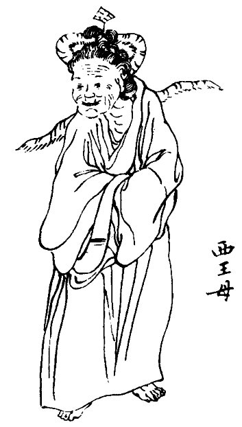
Fig. 2清代刊本《山海经》中的西王母插图。版画已经把她画成老妇模样，但仍保留了头上的「胜」与身后的豹尾。西晋太康二年（281 年）从汲郡魏墓出土的竹简里有《穆天子传》，写周穆王驾八骏西行，到昆仑之丘会见西王母。两人对歌：
此句另见西荒档案。
——望川
白云在天，山陵自出。道里悠远，山川间之。将子无死，尚能复来？——西王母
予归东土，和治诸夏。万民平均，吾顾见汝。比及三年，将复而野。——穆王
半人半兽的「司天之厉」在这里变成了能诗善对的西方部族女首领。汉代以后，西王母被神化，掌管不死之药，成为寿福之神。唐宋以后，她在道教经典、民间信仰和神魔小说里与玉皇大帝配对，成了家喻户晓的「王母娘娘」。
2.2 口头：泾川与天池
甘肃泾川自称西王母故乡，当地传说直接借用了《穆天子传》的对歌，却改写成一段爱情：穆王与王母在瑶池相爱，约定三年后再来，结果一去不返，王母天天倚窗望着泾河川。王母宫所在的山叫「回中山」，据说是因为穆王临走时一再回头（见《中国民间故事集成·甘肃卷·泾川民间故事》，1991）。
新疆阜康天池流传的是另一个版本《西王母与水怪》（2010 年吴新锋采录自非遗传承人马克义）：王母开蟠桃会没请水怪，水怪搅翻天池；王母一簪子把它镇住，簪子落在石上长成一棵树，就是今天景区里的「定海神针」。
两个例子都说明，口头神话不是文献的退化版本。它会附会地名、嫁接情节、改写情感，把一个遥远的神拉到自家门口。
2.3 活形态：庙会与赤雪嘉姆
泾川王母宫庙会据说始于北宋开宝元年（968 年），每年农历三月二十日、七月十八日举行。有开坛、请水、扬幡、拜忏、朝真礼斗、放焰口等一整套道场科仪，信众唱《王母宝卷》，艺人演《王母巡游》傩戏。近十年还有台湾道教信众专程来朝拜。在青海湖边，藏族民间把湖的化身「赤雪嘉姆」与西王母相认，这是昆仑神话、西王母信仰与藏地信仰交融的结果。
这里的神话不是被「讲述」的，而是被做出来的：日程表、仪式、唱词和朝圣路线本身就是叙事。
2.4 实物：画像砖与画像石
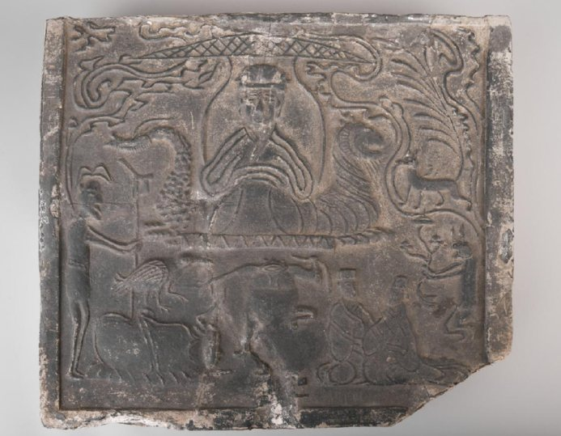
Fig. 3东汉西王母画像砖，四川大学博物馆藏。西王母端坐龙虎座，身后有瓶形龛；座前蟾蜍起舞，左有三足乌与持戟侍者，右有持灵芝的玉兔与九尾狐，下方有拜祷的人。汉代四川的画像砖、画像石里，西王母的图像已经相当程式化：龙虎座、戴胜、三足乌、九尾狐、捣药玉兔、蟾蜍，几乎形成一套「图像语法」。认得这套语法，就能在一块残砖上读出一整套关于不死与升仙的信仰。文首那张彭山崖墓石棺拓片也是同一套图像。
2.5 当代：景观与神话互塑
课件最后引了吴新锋、刘蓓对天山天池景区的研究（2023）：
- 景观与神话互塑：湖边一棵老榆树被讲成西王母的玉簪。神话借景观叙事，景观借神话传播。
- 节庆赋予神话新功能：西王母庙会、瑶池蟠桃会成为地方旅游的文化资源。
- 讲述中的神话：导游保留核心情节，又按自己的经历、游客和场所即兴添加；游客转述时又生成新的版本。
从甲骨上的两个字到景区导游的即兴发挥，三千多年里西王母一直在「被讲述」。我觉得第一讲真正想说明的是：神话不是一个静止的文本，而是一条在不同媒介之间不断转写的河流。研究神话，就是追踪这条河流。
§ 03为什么研究神话：一部学术史
3.1 研究神话的理由
课件给了四个理由：神话作为社会事实与社会秩序；神话作为「文学原型的贮存库」；神话与 20 世纪现代艺术的产生；日常生活与面向未来的神话。
第三点我原来没想到。20 世纪的「原始主义」艺术，是西方人类学和殖民扩张的副产品，却反过来成了现代主义的发动机：毕加索在《亚威农少女》（1907）中把非洲面具嫁接到人脸上；杜尚把工业制成品《晾瓶架》当作「部落器物」展出，戏仿原始主义本身；高更则去塔希提寻找浪漫化的「原始」。1984 年纽约 MoMA 的展览 "Primitivism" in 20th Century Art: Affinity of the Tribal and the Modern 把这条线索摆上了台面，也因此饱受批评。
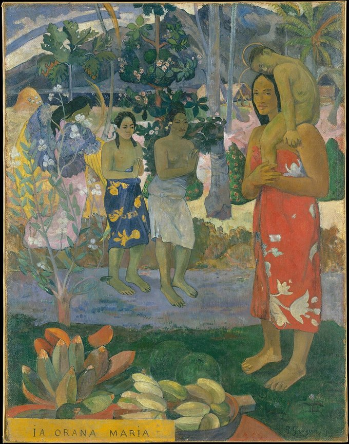
Fig. 4保罗·高更《Ia Orana Maria（圣母颂）》，1891 年，纽约大都会艺术博物馆藏。塔希提妇女怀抱孩子，身边是热带花果。基督教题材被移植进南太平洋的「原始」风景，是「浪漫的原始主义」的代表作。当时的人类学进化论把神话看作原始社会的「遗留物」。艺术家则把这个遗留物翻过来，用作批判现代性的参照系。两种看法立场相反，前提却相同，都假定存在一个与「现代」对立的「原始」。
3.2 西方神话学简史
课件把西方神话学分成三个阶段，我按时间线压缩如下：
- 古典时期：柏拉图在《理想国》中审查诗人；亚里士多德在《诗学》中把 mythos（情节）定为悲剧的灵魂；普罗提诺把神话看作通向「太一」的象征。
- 中世纪到文艺复兴：奥古斯丁斥异教神话为魔鬼的诱惑；但丁把基督教与古典神话融进一部史诗；薄伽丘《异教诸神谱系》第一次系统整理希腊罗马神话；斐奇诺用柏拉图主义阐释俄耳甫斯教。
- 启蒙到浪漫主义：维柯《新科学》（1725）提出「诗性智慧」；赫尔德把民俗神话当作民族精神；格林兄弟中的雅各布写《德国神话》；马克斯·缪勒发展比较神话学与「语言疾病说」；泰勒《原始文化》提出万物有灵论；弗雷泽《金枝》建立神话—仪式学说。
- 20 世纪：弗洛伊德（《图腾与禁忌》，1913）把神话看作被压抑冲动的象征性释放；荣格看作集体无意识的显现；弗莱发展出神话—原型批评；列维-斯特劳斯转向结构；罗兰·巴特的《神话学》（1957）则说神话是一种「去政治化的言说」，广告、新闻和明星照片都在把特定的历史与权力包装成「自然」；女性主义神话学（如金芭塔丝的「女神文明」）则试图打捞被父权叙事遮蔽的女神。
巴特那一条我觉得最值得记住。按他的定义，神话不在过去，而在我们每天看的东西里，这和 1.4 节「新神话可能产生」的判断正好接上。
3.3 中国神话学
中国神话学是西学东渐的产物，最早提出「中国神话」问题的也是西方和日本学者。大致分期：
| 阶段 | 时间 | 代表 |
|---|---|---|
| 萌芽 | 1903 | 蒋观云《神话历史养成之人物》 |
| 奠基 | 1920 年代初—1937 | 文学家：鲁迅、周作人、茅盾，引入英国人类学派；历史学家：顾颉刚、杨宽的「古史辨」 |
| 拓展 | 1937—1940 年代末 | 芮逸夫、凌纯声、吴泽霖、楚图南、常任侠等的少数民族田野调查 |
| 曲折 | 1949—1977 | 丁山《中国古代宗教与神话考》（1960）等 |
| 复苏 | 1977—2000 | 中国神话学会成立；考据、考古与田野并重 |
奠基阶段有两条路。茅盾的《中国神话研究 ABC》（1929）在文化史里考察神话，提出中国神话的北、中、南三区格局，并系统比较东西方神话。顾颉刚则提出「层累地造成的中国古史」：尧、舜、禹这些「古帝王」很多是由神话一步步历史化而来的；杨宽进一步主张「神话演变分化说」，一个神在流传中「一化二、二化三，直到无数」。前者把神话当作文学，后者把古史还原为神话，方向相反，都极大地改变了人们读古书的方式。
课件最后有一段反思，我抄在这里：
- 走出东西方二元比较（不要拿希腊神话当尺子去量中国神话的「不发达」）；
- 尊重和理解每个神话故事自身的特征；
- 重视故事的存在形态，以及流传与表演的语境和主体；
- 充分调查和理解故事的地域性（locality）和历史性。
这四条其实就是第一讲西王母案例的方法论。
§ 04人类学家：志异文本的现代作者
第二讲的标题很妙。《聊斋志异》的作者叫「异史氏」。人类学家深入「异」地记录「异」俗，在某种意义上就是现代的志异作者。这一讲的主角是闻一多。
4.1 闻一多和他的时代
Fig. 5闻一多（1899—1946）。他在清华开的课里，最「叫座」的是古代神话。
我们通常知道的闻一多是诗人（《红烛》《死水》）和民主斗士（1946 年遇刺）。但他还有一个身份：神话学家。1936 年他在清华开设「中国古代神话研究」专题课。他自己说：
我们的历史课题甚至伸到历史以前，所以我研究了神话；我的文化课题超出了文化圈外，所以我又在研究以原始社会为对象的文化人类学。
几条背景值得注意：
- 美术训练：1922—1925 年他先后在芝加哥艺术学院、科罗拉多大学和纽约艺术学生联盟学画。视觉分析的眼光后来变成了「以俗证古」的方法，从图像、纹饰、仪式切入古史。
- 「谎中求真」：法国汉学家葛兰言（Marcel Granet）主张「伪中求真」，他的《中国古代舞蹈与传说》经李璜摘译，1933 年以《古中国的跳舞与神秘故事》出版。闻一多的「谎中求真」受其启发，但多了一层：他站在西方和少数民族两个「他者」之间，思考中华民族的自我形象。
- 译介热潮：民国三十多年译出大量社会科学和人文著作。海顿的《南洋猎头民族考察记》、施密特的《比较宗教史》、马林诺夫斯基的《巫术科学宗教与神话》（李安宅译）、罗维的《初民社会》（吕叔湘译）、倍松的《图腾主义》（胡愈之译）等书，构成了闻一多那一代人的理论工具箱。
他的方法论可以用一句自述概括：
我是把古书放在古代人类的生活范畴里去研究；站在民俗学的立场，用历史神话去解释古籍。
《高禖郊社祖庙通考》的跋里还有一句更有力的话：
历史为人类活动之记录，神话则其活动动机之口供。由历史可以知其「然」，由神话更可以知其「所以然」也。
4.2 三千五百里：一次行走的田野
1938 年，长沙临时大学西迁昆明，其中一路是步行的「湘黔滇旅行团」：250 多名学生，加上黄子坚、闻一多、曾昭抡、吴征镒等 11 位教师组成的辅导团，徒步约 3500 里，历时 68 天，横穿湘、黔、滇三省。旅行团的宗旨写得很好：「习民情，考查风土，采集标本，锻炼体魄，务使迁移之举本身即是教育。」
闻一多脚上磨满血泡也坚持不乘车，晚上和学生一样睡在老乡家的干草上。他和李继侗、冯友兰约定抗战不胜利不剃胡子，那把著名的胡子就是这时蓄起来的。一路上他画了上百幅铅笔速写。
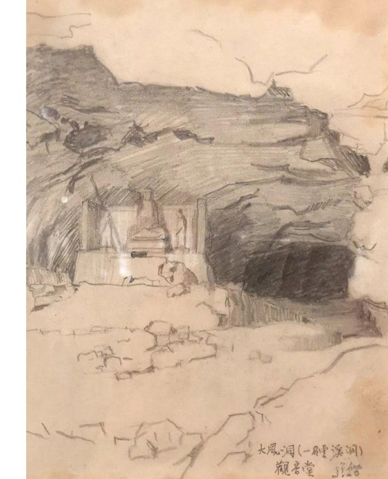
Fig. 6闻一多西迁途中的铅笔速写《大风洞观音堂》，1938 年 3 月 25 日作于贵州炉山县（今凯里一带）村寨旁的山庙，右下角有题记。学生刘兆吉一路采集了两千多首民谣。他每天早饭后揭下锅巴塞进茶缸，饿了就撕一块吃，晚上在油灯下整理当天的歌谣。到昆明后，他编成《西南采风录》，闻一多和朱自清都为它作序。另一位学生钱能欣写了《西南三千五百里》。
这段历史让我想到，田野不一定要专门「去」，迁徙本身就可以是田野。
4.3 伏羲考
《伏羲考》并不是闻一多生前定稿的一本书。他 1940 年代初写了《从人首蛇身像谈到龙与图腾》《战争与洪水》《汉苗的种族关系》《伏羲与葫芦》等几篇文章。1946 年他遇刺后，朱自清主持遗著整理，把这几篇合编为《伏羲考》，收入 1948 年开明书店版《闻一多全集》。
它的论证可以拆成一条链：
人首蛇身 → 双龙 → 龙蛇 → 图腾 → 龙族 → 葫芦 → 造人故事
支撑这条链的是三类材料。
文献。《易·系辞》说包牺氏「仰则观象于天，俯则观法于地……始作八卦」；司马贞补《三皇本纪》则说伏羲「蛇身人首」，母亲华胥「履大人迹于雷泽」而生下他。《山海经·海内经》里有一位南方苗民之神「延维」：「人首蛇身，长如辕，左右有首」，闻一多认为它就是伏羲女娲。
口述。芮逸夫 1930 年代初随凌纯声在湘西做苗族调查，采集到四个洪水故事，1938 年发表《苗族的洪水故事与伏羲女娲的传说》。四个版本细节不同，骨架却一致：
| 情节 | 祥述故事 | 佐述故事 | 傩公傩母歌 | 傩神起源歌 |
|---|---|---|---|---|
| 洪水 | 雷公发洪水数十日 | 雷公发洪水七日七夜 | 玉皇上帝发洪水七日七夜 | 雷公发洪水七日七夜 |
| 避水 | 兄妹各入黄瓜 | 兄妹共入葫芦 | 兄妹共入葫芦 | 兄妹共入仙瓜 |
| 配偶 | 扔磨子 | 金鱼老道撮合 | 东山南山焚香，香烟结团 | 扔竹片、扔磨子 |
| 传人 | 生肉块，割弃变人 | 未详 | 生肉块，割出十二童男童女 | 生怪胎，割弃变人 |
概括起来就是：始祖擒雷公，雷公逃脱后发洪水报复，世人尽死，只剩兄妹二人；兄妹成婚，生下怪胎，剖开化为人类。芮逸夫还从语音上论证，鸦雀苗故事里的兄长名 Bu-i 意为「第一祖先」，与「伏羲」古音相通。他对母题演变有一段很精到的话：
最初只有一个简单的故事作中心的「母题」。后来经过众口的传说敷演……或因附会异词而曲全其解，或因语义失解而附会其说，或因记忆失真而弥缝其词。
图像。1938 年重庆沙坪坝出土东汉石棺，常任侠考证出前额刻的捧日人首蛇身像是伏羲，捧月像是女娲。闻一多评价说，考古家对这个问题的贡献，在于确定了图中另一人是女娲，由此证实了两人的夫妇关系。他进而判断，伏羲女娲传说最活跃的时期（西汉末至东汉末），正是人首蛇身神画像大量出现的时期。
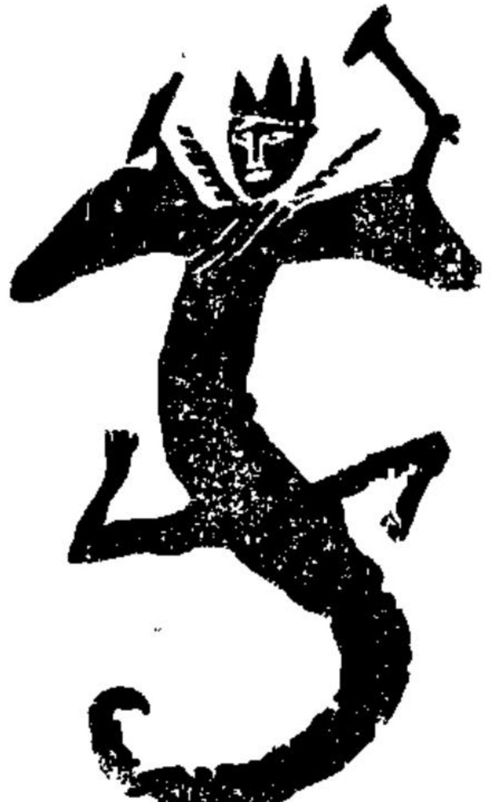
Fig. 7重庆沙坪坝石棺前额画像摹本，人首蛇身、头戴冠、双手上举（仿常任侠《沙坪坝出土之石棺画像研究》插图，《时事新报》渝版《学灯》第四十一期）。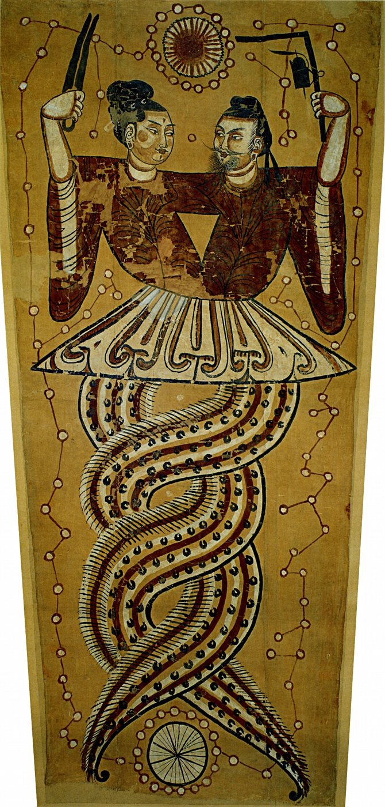
Fig. 8吐鲁番阿斯塔那墓出土的《伏羲女娲图》，唐代绢本设色，新疆维吾尔自治区博物馆藏。二人上身相拥，蛇尾交缠，手执矩与规，头顶日轮，尾下月轮，四周是星辰。把三类材料拼在一起，闻一多得到的不只是「伏羲女娲是兄妹配偶型洪水始祖」这个结论，还有一个更大的论断：
所谓龙，就是原始的龙（一种蛇）图腾兼并了许多旁的图腾后形成的一种综合式的虚构生物。
龙图腾族团起初在黄河上游，一部分北迁，一部分南迁为荆楚吴越诸蛮，今日的苗族是其后裔；留在原地的那部分「做了我国四千年文化的核心」。这是在抗战最艰难的时候，一位诗人用训诂、音韵、考古和田野材料给出的民族同源叙事。读到这里会明白，蒋观云说神话能「造成一国之人才」，并不只是修辞。
4.4 神话的三种解释
这一讲的后半部分，把《伏羲考》放回西方理论的三条谱系里，正好对应它的三种论证。
语言起源论。 卢梭追问，是社会先于语言，还是语言先于社会；赫尔德的《论语言的起源》（1770 年写成，次年获柏林科学院奖）则认为，语言出自人自身的悟性。把这条思路用到神话上的是马克斯·缪勒的「语言疾病说」。恩底弥翁是厄利斯的牧人王子，月神塞勒涅（Selene）爱上了在山洞中沉睡的他，他从此永睡不醒、永不衰老。缪勒说：
如果人们都知道 enduma 意为日落，恩底弥翁的神话就永远不会产生。……人们说「塞勒涅亲吻着入睡的恩底弥翁」，而不是说「现在是晚上」。
也就是说，神话是词义遗忘之后留下的「误读」。闻一多论证伏羲（包戏、匏瓠）和女娲（苞娲、匏瓜）都是「葫芦」的音转，走的也是这条从语音出发的路。
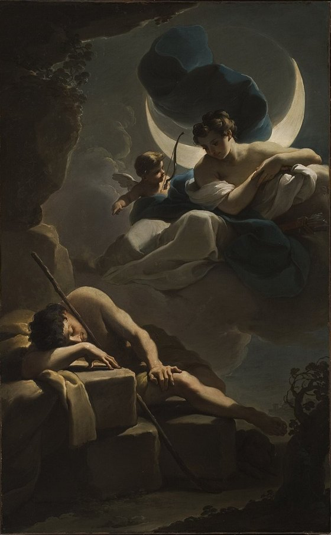
Fig. 9乌巴尔多·甘多尔菲《塞勒涅与恩底弥翁》，18 世纪，洛杉矶县立艺术博物馆藏。新月下降的月神与沉睡的牧人：在缪勒看来，这只是「日落、月升」两个词被遗忘后的诗意残余。社会起源论。 维柯认为各异教民族的历史都从神话开始，原始人是「崇高的诗人」，「把一切制度都想象为神」。涂尔干和莫斯在《原始分类》中进一步说，分类的框架来自社会，「两种形式的起源都是社会」。莫斯的《巫术的一般理论》说「大众舆论造就了巫师」，社会才是仪式戏剧中真正的行动者。对应到《伏羲考》，就是图腾团族、姓氏制度，以及洪水与战争所代表的社会冲突和秩序崩溃。
心理起源论。 弗洛伊德在《图腾与禁忌》中把禁忌比作强迫症：两者都没有可以归因的动机，都由内在的「需要」维持，都容易替换和传染，也都要求类似仪式的行为。图腾动物则是俄狄浦斯情结的转移对象。闻一多对「断发文身」的解释正用到这一层。许慎说文身是为了「尊荣」，闻一多认为这背后是图腾心理：
图腾既是祖宗又是神，还有什么比像祖宗、像神更值得骄傲？……「断其发，文其身」——人一像龙，人便是龙了。
这一讲的小结是三组对子：东西融汇（闻一多和他的时代）、古今贯通（伏羲考）、文理渗透（三种解释）。我自己的感受是，《伏羲考》的方法在今天看来有不少可以商榷之处，比如图腾说的普遍性、音转论证的弹性都值得推敲。但它示范了一种很难得的研究姿态：同时调动文献、口述、图像和理论，并且清楚地知道自己在为谁写作。
§ 05帝国的隐喻：神、鬼、祖先与中国社会
5.1 从文本到社会
第三讲从两个志怪故事开场。
第一个出自干宝《搜神记》。东汉末年，广陵人蒋子文「嗜酒，好色，挑挞无度」，常说自己「骨清，死当为神」。他做秣陵尉时追贼到钟山下，伤额而死。到孙权时，他白马白羽出现在道上，要百姓为他立祠，「不尔，将有大咎」。接着就是瘟疫、钻耳的小虫、一日数十处的大火。最后孙吴朝廷封他为中都侯，加印绶、立庙堂，把钟山改名蒋山，「自是灾厉止息，百姓遂大事之」。
一个品行不端的小吏，靠灵验加官封获得了神格。这个故事的叙事结构是「兆—应」：降灾是兆，册封是应，背后是巫术式的因果关联。
第二个是吕洞宾题壁诗的流传史：
- 北宋熙宁元年（1068），一位自称「回山人」的道人在湖州沈东老家饮酒，用石榴皮在壁上题诗，出门过桥后不知所往。有人说这是吕洞宾，因为「回」字两个口，正是「吕」。苏轼后来听沈东老之子讲起，作了和诗，还在给王巩（定国）的信里问：「回山人题壁诗，公曾见之否？」
- 王巩的《闻见近录》记了另一首题壁诗：吕洞宾在岳州白鹤寺古松下休息，遇到树神，题诗「惟有千年老树精，分明知是神仙过」。
- 到元代苗善时的道教圣传《纯阳帝君神化妙通纪》，树神成了「松之精」，诗句变成「惟有南山老树精」，又添上了救人、斩蟒、留下「稚松」和石墨遗迹等情节。
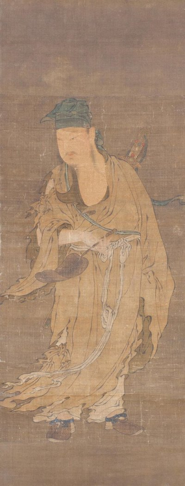
Fig. 10明代绢本《吕洞宾像》，费城艺术博物馆藏。宋代士大夫书信里一则真假难辨的题壁轶事，几百年间被层层叠加，最终成了道教圣传和画像里的纯阳祖师。这个例子很像顾颉刚说的「层累」，只是累积的不是古史，而是神性。更重要的是，苏轼的那封信说明，文本的流传嵌在真实的社会关系里。要理解神怪故事，就要从文本走到社会。
5.2 汉学人类学家的研究脉络
王斯福（Stephan Feuchtwang）的《帝国的隐喻：中国民间宗教》（The Imperial Metaphor: Popular Religion in China，1992；赵旭东中译）有三位绕不开的前辈。
莫里斯·弗里德曼（Maurice Freedman）：宗族。 他从新加坡华人的家庭与婚姻研究起步，写出《中国东南的宗族组织》（1958）和《中国东南的宗族与社会》（1966），用华南宗族回应非洲研究中发展起来的继嗣理论，也开启了「在散乱的信仰之下寻找秩序」的中国民间宗教研究。他问过一个很好的问题：祖先的灵魂去哪儿了？ 答案是三处：灵牌（家户与祠堂，体现亲属体系）、坟墓（死者与生者交换的场所）、地府（道德审判，一个官僚国家）。
施坚雅（G. William Skinner）：市场。 1949 年，康奈尔大学博士生施坚雅来到成都郊外的高店子做田野。后来他写出《中国农村的市场和社会结构》（1964—1965），提出了中国社会研究中最著名的几何模型：农民生活的基本单位不是自然村，而是基层市场区域；理想状态下，这些区域呈六边形铺满平原，若干基层市场又围绕一个中间市场组成更高一级的六边形，层层上推到区域中心。
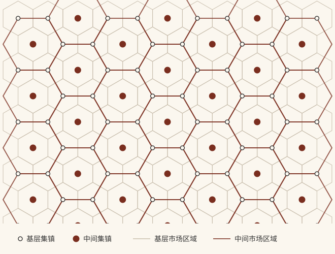
Fig. 11施坚雅基层—中间市场体系示意图（按其「模型 A」自绘）。每个基层集镇服务一个小六边形区域；中间集镇的市场区域是更大的六边形，基层集镇位于它的顶点上，同时与几个中间集镇往来。课件里还对比了一张当代农产品市场结构图：中间层级消失了，村庄直接连接多个基层市场和全国性市场，金字塔变成了网络。施坚雅模型的价值，也许正在于它让这种变化变得可以测量。
武雅士（Arthur P. Wolf）：宗教。 他主编的《中国社会中的宗教与仪式》（1974）里有一篇名文《神、鬼和祖先》，开头是这样一段观察：
在台北盆地西南端的农村地区，保守的家庭每天早晨和晚上都会烧三炷香。一炷放在后门外的壁龛里，烧给游魂；一炷供奉灶神；另一炷放在直系祖先碑前的炉中。
三炷香对应三种超自然存在，也对应农民社会世界里的三类人：
| 超自然存在 | 祭品 | 对应的社会角色 | 关系 |
|---|---|---|---|
| 神 | 冥币、金纸（像缴税） | 官员 | 科层与权威 |
| 祖先 | 家常饭菜 | 亲属 | 继嗣与赡养 |
| 鬼 | 量多但随便（像打发乞丐） | 陌生人、流氓、乞丐 | 危险与施舍 |
土地公管着本地的鬼，灶神定期向上汇报一家人的言行，这几乎就是一套基层行政。课件里有一句话我印象很深：中国的官僚制度在行政管理上也许是失败的，但在观念上是成功的，它依照自己的模型创造了一个宗教。
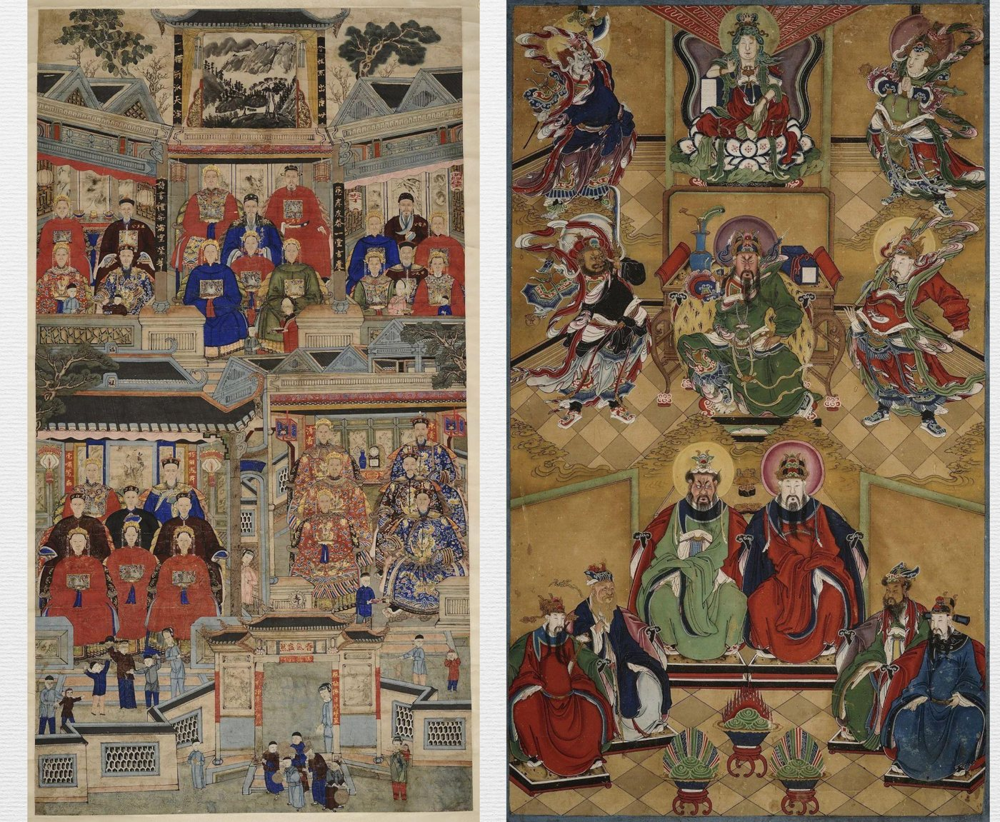
Fig. 12左：李氏祖先群像，清晚期，纸本设色；右：关公众神图，清代，绢本设色。均为长沙市大观仓艺术博物馆藏（图片取自课件）。祖先与神明都穿官服，按品级排列：家族的祖先像是一座小朝廷，众神图是一座大衙门。三人合起来，正好是汉学人类学关心的三大块：宗族与村落、市场、宗教。方法上则都是社区研究加长期田野，目标是回答「社会何以可能」。
5.3 帝国的隐喻
王斯福在台湾「山街」做田野，看到的祭祀结构与武雅士相近：神被「请进来」，烧金纸；祖先在家中，烧银纸；兵和鬼的祭品放在门槛上或门外。这种区分可以一直追溯到唐代。戴孚《广异记》里，一个在地府当差多年的小吏托人烧钱：
金钱者，是世间黄纸钱；银钱者，白纸钱耳。……世作钱于都市，其钱多为地府所收。
在市场上做的纸钱会被地府「截留」，所以要在家中密室里请人凿钱，到水边去烧。看灰被风吹的方向，还能知道钱有没有被别的鬼神收走。阴间不仅有官，还有财政、税收和贪污。
但王斯福和武雅士有一处关键的不同。武雅士的模型是对应性投射：神就是官，鬼就是乞丐。王斯福强调的是隐喻：
- 民间宗教对帝国行政、贸易与惩罚体系的模仿，不是一模一样的复制，而是再创造，有时甚至会发生意义的逆转；
- 它关心的是民间宗教如何把分散的个人联结在一起：香炉、分香、绕境巡行、炉主与丁钱，划出一层层重叠的社区边界，包括市场圈、婚姻圈、祭祀圈和信仰圈；
- 道士的醮仪是「仪式性的戏剧」，而不是实际的威权与制裁。
与一座家户的神龛相比，一座地方性庙宇就更像是围绕着一座香炉而有的社会性媒介的建构，这是一个把家户的神龛容纳进来的中心。（《帝国的隐喻》，第 157 页）
书中有两句话可以当结论：
中国宗教保持整体性的根本方面，在于宗教的产生源自于世俗社会，而信仰和仪式的隐喻和象征又服务于世俗社会。
恰恰是在对帝国的秩序加以复制的地方，会导致一种分裂。
后一句是这一讲最有意思的地方。地方庙宇模仿帝国的衙门，正因为是模仿，它就可以自立中心、自划边界，甚至自封神明。蒋子文的故事倒过来看，正是国家不得不承认一个由民间「灵验」逼出来的神。隐喻是沟通国家与民间的语言，也是两者讨价还价的场所。
课件小结列了四点：嵌入社会实践的文本；鬼神崇拜既是现象事实，也是文化事实；政治社会生活中神话式的运作方式；以及一个自我质疑：「神话与社会之间的关系，是否是一种循环论证？」用社会解释神话，又用神话证明社会，这个问题我还没有想清楚，先记在这里。
§ 06神话与仪式：白云山的四月八
6.1 从「说」到「做」
第四讲从一件青铜器讲起：商代后期的猛虎食人卣，一头蹲踞的猛虎抱着一个人，人头就在虎口下面。和它相关的是饕餮神话：「有首无身，食人未咽，害及其身」。饕餮是有超凡能力的神兽，也代表信仰这种神兽的族群。
课件的判断是，这类神话和艺术是仪式的反映：以猛兽为族神的血祭（比如廪君的祭祀），用兽皮裹尸送死（《云南志略》说「以豹皮裹尸而焚」），以及和成年礼相对应的「死亡—复活」仪式。前三讲以说为主，读文本、读图像；从这一讲开始转向做，看神话怎样在身体、器物和时间安排里被实践出来。
这一讲的副标题是「西北道教民俗的视觉民族志」，田野点是陕西榆林佳县白云山。
6.2 黄河边的白云观
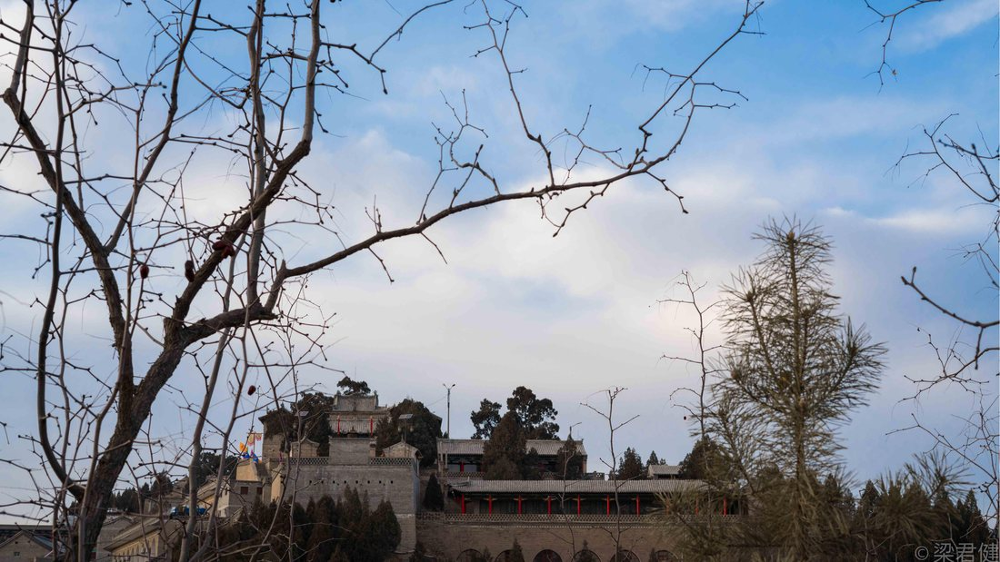
Fig. 13佳县白云山上的白云观，透过冬天的枯枝仰拍（梁君健摄，取自课件）。白云山在黄河西岸的黄土峁上，对岸就是山西。山上的白云观号称西北最大的道观。它的「合法性」有两层，课件称之为「日出东方的传说」和「国家非遗的加冕」：
- 1947 年毛泽东到访。《毛泽东年谱》记载，他 10 月 21 日来到白云山脚下的南河底村，第二天正逢重阳节，上山看庙会，参观白云观，说「这些东西，都是历史文化遗产，要好好保存，不要把它毁坏了」，还为佳县群众剧团题词「与时并进」。这件事在当地被反复讲述，本身已经成了一个地方传说。
- 2008 年列入国家级非遗。「白云山道教音乐」入选第二批国家级非物质文化遗产名录（传统音乐类，Ⅱ-139）。据介绍，明万历三十六年（1608），北京白云观道士王真寿、张真仪等持陕西布政司的帖子到白云山总理教务，把北京白云观的道教音乐带到了陕北，所以有「白云神韵，圣境仙乐」的说法。
一个是革命叙事，一个是国家文化遗产体系，都在为一座道观和它的庙会背书。这让我想到第三讲的蒋子文：神的地位从来离不开「官封」，只是今天封赐的形式换了。
6.3 上与迎：两种宗教的二元结构
白云山最大的庙会在农历四月，从初一到初八，日程如下：
| 日期 | 仪式 | 主导者 |
|---|---|---|
| 初一（晚 8:00） | 薰坛 | 道士（「上」） |
| 初二（早 4:30） | 起经 | 道士（「上」） |
| 初三（早 5:00） | 上表 | 道士（「上」） |
| 初四（晚 8:00） | 醮纸 | 道士（「上」） |
| 初五（早 4:00） | 迎香纸 | 信众与香会（「迎」） |
| 初六（上午 10:30） | 迎钱粮 | 信众与香会（「迎」） |
| 初七（中午 12:00） | 迎供 | 信众与香会（「迎」） |
| 初八（晚 8:00） | 观灯 | 信众与香会（「迎」） |
前四天是道士主导的打醮，属于「制度宗教」；后四天是信众和香会主导的「迎」，属于「民俗宗教」。课件把这称为一种动态的二元结构：两者共享同一个时间表和同一座山，却由不同的人组织、按不同的逻辑运行。
打醮的完整科仪很长：薰坛、起经、出幡、吊大塔、开光、行香、摆灯、上表、上供、拜忏、放赦、扬幡、转九曲、施食、送圣。课件把它和南方正一派的各种醮仪并列：祈安清醮、平安醮、太平醮、拦街福、清醮会、做平安、清街醮，名目各异，功能都是驱除灾疫、祈求平安和丰收。这里还有「阳事」与「阴事」的区分：一边是给神上表祈福，一边是给孤魂野鬼施食，正好对应第三讲武雅士说的神与鬼。
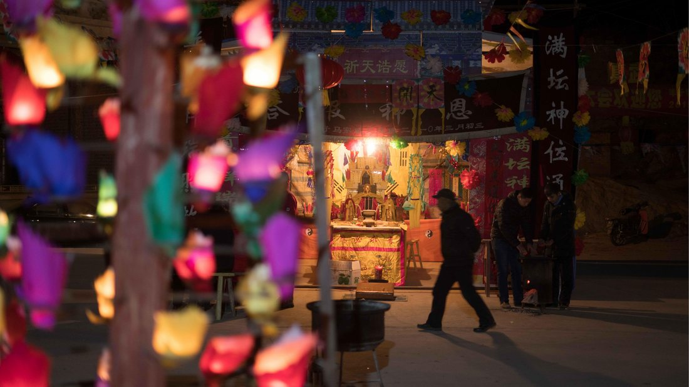
Fig. 14白云山庙会夜间搭起的神坛，横幅写「祈天诰愿」，竖幅写「满坛神位」，前景是彩色纸花灯（梁君健摄，取自课件）。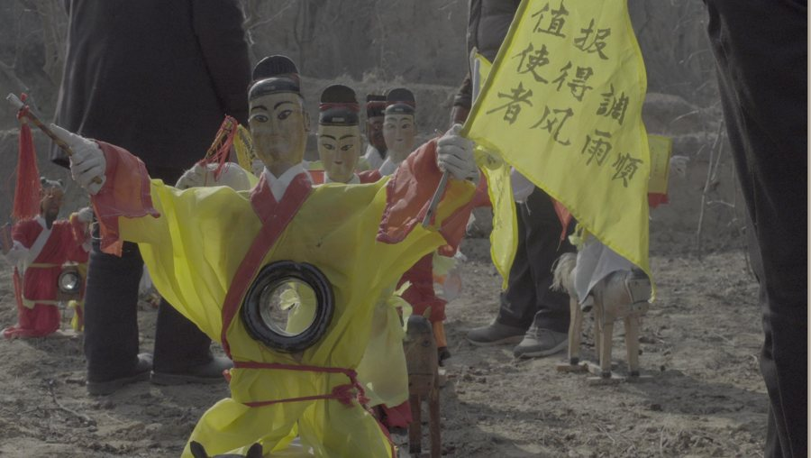
Fig. 15醮仪中使用的纸扎「值使者」，手持黄旗，旗上写「报得调风雨顺」，旁边是纸马（梁君健摄，取自课件）。这是要把信众的表文送上天的使者。我觉得「值使者」这张图最能说明第三讲讲的「帝国的隐喻」：上表就是向天庭递公文，纸扎使者就是驿卒，纸马是驿马。整套醮仪是一场模仿官府文书流转的戏剧。
6.4 道人、信众与社会
课件接下来从三个角度展开庙会。
道人。 这里的「道人」不只是道士，还包括写幡的、做纸扎的、给庙会做饭的厨师，以及给庙里画壁画的画师。他们都是让仪式「做」得出来的人。课件特别讲到画师：从揉皱白纸上的铅笔线稿，到满墙的众神朝会和踏风火轮的哪吒，神的形象是一笔一笔画出来的。另一个话题是梦中遇仙，引的是研究陶弘景的《即神即心：真人之诰与陶弘景的信仰世界》。上清派经典里，女神下凡向修道者传授经文，比如「蓬莱都水监」的故事。课件的关键词是「从个体体验到群体行动」：一个人的梦，可以变成一群人的信仰实践。
信众。 研究信众用的是第五讲还会细讲的「三轮访谈」：先开放地聊受访者过去的经历，再就研究问题追问细节，最后请对方反思自己行为的意义。
社会。 这是我觉得最有意思的部分。白云山庙会由「五大会」组织，课件的概括是：个体信众的宗教体验，加上香会组织的朝山活动。香会从陕北各县，以及山西、内蒙古、宁夏赶来，有的还在山上设了会馆（我在课件照片里看到了「山西会馆」）。信众里有渡黄河过来的山西老乡，也有穿蒙古袍、拿着经幡的蒙古族信众，甚至有喇嘛诵经、摔跤娱神。
后四天是庙会的「正日子」。初五「迎香纸」，晚上要唱神戏：戏首先是唱给神看的，人只是陪着看。课件里有一张后台的照片，演员在灯下勾好了脸，正在整理戏服。初六「迎钱粮」那天要抽签：
- 先公开账目，宣布修缮工程开启；
- 头三签是人口、夏粮和秋粮；
- 然后榆林的所有区县，以及山西、内蒙古、宁夏，各抽一签。
一座山上的一个签筒，替一个跨越四省区的区域预测来年的人口和收成。初七「迎供」，供桌上一排排不锈钢托盘摆满面点、菜肴和水果，插着写有「正」「大供」之类的小黄纸签。这些钱粮和供品的来处也看得见：村里墙上贴着红纸、黄纸的布施名单，谁出了三十元、谁出了一百元，一笔一笔写得清楚。
课件管这一部分叫「庙会的地理学」。庙会可以分三个层级：村落内部的庙会、跨村落联盟的庙会，以及区域性庙会。泰山香社的朝山日期是个很好的对照：山东省以外的香社在三月二十八（碧霞元君诞辰）上山，本地居民在六月初六（课件注为纪念宋真宗封禅泰山；这一天也是真宗定下的「天贶节」），蓬莱等地则在四月初八（菩萨诞辰）。不同来路的人各有各的日子，一座山的日历上叠着好几张地图。白云山的五大会也是这样一张地图。这和第三讲施坚雅的市场区域、王斯福的「祭祀圈」是同一回事：庙会划出了一个社会的边界，而这个边界和行政区划并不重合。
6.5 妙峰山：中国民俗学的起点
课件先简单回顾了道教庙会的源流：它起源于南北朝至隋唐之间；到了唐代，宗教仪式和民众参与结合在一起；从此庙会一直有宗教和民俗两个维度，而主要的动力是信众。泰山香社的活动可以分成三类：集体进香仪式、个人祈愿仪式和日常活动仪式。白云山「上」与「迎」的分工，放在这条长线上看并不奇怪。
接着，课件把白云山放进了一条学术史的线索里，起点是北京西郊的妙峰山。
顾颉刚真正留意妙峰山，是和朋友吴缉熙游三家店、渡浑河那一次。那天恰逢四月初八，沿路小庙（就是四年前驴夫告诉他的那些茶棚）「击着磬，唱着喝茶喝粥的歌」，庙内外歇满了进香的人，每来一个就到神座前磕一个头。他想跟着上山，可是没带过夜的东西，只得回家。回家以后，街上贴的香会「会贴」一张张映入眼帘。又忍了一年，他「这个好奇心再也不能制止」，请北京大学研究所国学门主任沈兼士批准派人调查。1925 年 4 月 30 日（阴历四月初八）至 5 月 2 日，顾颉刚、孙伏园、容庚、容肇祖、庄严组成的调查团，对妙峰山香会做了三天调查。文章在《京报》副刊连出六次「妙峰山进香专号」，1928 年，29 篇调查文章结集为《妙峰山》出版。这通常被看作中国民俗学田野调查的起点。
后来顾颉刚为奉宽的《妙峰山琐记》作序，觉得香会这种风俗因为生计艰难、民智开通，快要消失了，呼吁大家注意「这垂尽的余焰」：
本书的读者们，你们若不继续着奉宽先生的脚步而前进，你们真是辱没了这时代的使命了！
一百年后看，余焰并没有熄灭。之后的研究一路延续下来：
- 1929 年 5 月 17 日至 19 日，燕京、北大、清华、中山四校组成「一八妙峰山进香调查团」做了第二次大规模调查；
- 1941 年，李慰祖调查北京郊区的「四大门」信仰（狐狸、黄鼠狼、刺猬、蛇），找到了民众和香头到妙峰山朝顶进香的深层原因。他没有把这些当「迷信」打发掉，而是追问动物如何被社会性地神圣化，以及信仰怎样参与治病、调解和维持秩序；
- 再往后，课件以「绵延不绝：华北的朝顶网络与香会组织」为题列了一组研究：吴效群《妙峰山：北京民间社会的历史变迁》，孙庆忠编《妙峰山：香会组织的传承与处境》，岳永逸《灵验·磕头·传说：民众信仰的阴面与阳面》，鞠熙《游观入道：作为自我修行的女性朝山——以明清碧霞元君信仰为例》，杨念群《北京地区「四大门」信仰与「地方感觉」——兼论京郊「巫」与「医」的近代角色之争》，以及韩书瑞（Susan Naquin）的 Gods of Mount Tai: Familiarity and the Material Culture of North China, 1000–2000。
鞠熙的研究让我印象很深。她发现 19 世纪以后，北京的城墙角楼和城门楼上各住着有名有姓的狐仙：东北角楼是「红姑娘」，西南角楼是「大仙爷」，宣武门是「胡四太爷」，正阳门是「天狐」，东南角楼是「狐总管」。角楼是撑天的山岳，城楼标示空间的界限，于是北京内城成了一个小宇宙：
19 世纪至 20 世纪初的北京城不是仅有人类建筑与文化的城市，更是万物共生共享、山水皆有其灵的神话世界。——鞠熙：《狐仙故事与北京城的宇宙论意义》
岳永逸对庙会的定义可以作为这一节的结论：庙会是「以信众为行动主体的」、与天地日月、神佛仙道、鬼怪「沟通、交际的仪式性活动的展演空间」。在这里，僧道这些职业宗教人士的引领作用往往会被信众的自主行为冲淡，「更多的沦为一种装饰性符号」。白云山「上」与「迎」的二元结构，在妙峰山的学术传统里早有回声。
6.6 什么是道教，什么是神话
课件的小结只有五个词：信众、艺人、社会、什么是道教、什么是神话。最后一页引了美国新批评派诗人兰色姆（John Crowe Ransom）的一段话：
艺术赋予自然以某种形式，在人和自然客体之间建立审美距离，使人将自然客体作为审美对象进行关照，获得审美愉悦，节制物欲；艺术与宗教仪式一样倚重人为的形式，以便将自然的人变成审美的人，将本能的经验变成审美的经验。——兰色姆：《一首几乎匿名的诗》
我的理解是：在白云山，神话不是被「讲」出来的，而是被「做」出来的。表文、纸扎、壁画、签筒、日程表，都是「人为的形式」，它们把一个区域里的人在一年中的某几天组织起来。如果只读道教经典，看不到这些；如果只看热闹，也看不到这些形式背后的秩序。
§ 07田野与写作：民族志怎样炼成
第五讲换了一个方向：前四讲是研究别人的神话，这一讲讨论研究者自己，也就是我们怎样去田野、怎样记录、怎样写。
7.1 走出摇椅
19 世纪的人类学有一种奇特的劳动分工。像弗雷泽这样的「摇椅人类学家」在书斋里写《金枝》，材料来自传教士、殖民官员和旅行者寄回的报告。采集者像是「手工制品商人」，书斋学者则默认这些材料是中性的。英国科学促进会 1874 年首版的《人类学笔记和问卷》（Notes and Queries on Anthropology），就是教业余采集者怎么提问、怎么记录的手册。
但材料真的中性吗？澳大利亚的生物学家斯宾塞（Walter Baldwin Spencer）在给弗雷泽的信里写道：
根据我的经验，德国人或者莫拉维亚传教士也许是最为杰出的个体，他们愿意去学习部落的语言。但是，他们从来没有真正地理解当地人，而当地人也从来没有把自己完全开放（opens himself）给德国传教士。在澳大利亚，唯一能够提供关于当地人信仰的可信传教士是耶稣会士，但不幸的是他们极少写作。——斯宾塞致弗雷泽，1903 年 7 月 24 日
一个月后，他在另一封信里说得更直白：
Siebert 当然是一个好人，并且完成了很不错的工作，但他是一名德国人，而据我所知，中部的原住民讨厌并蔑视德国人，这让我坚信，他并没有能够抵达事物的最深层。在澳大利亚，只有罗马天主教的牧师才能够真正地了解当地人。他们的宗教形式和庆典对于这些黑人伙计们很有吸引力，也许这让原住民想起了他们自己的黄金时代的神话……——斯宾塞致弗雷泽，1903 年 8 月 27 日
谁去问，决定了当地人愿不愿意说。斯宾塞的判断里有明显的偏见（「讨厌德国人」是他「据我所知」的说法），但他注意到的问题是真实的：材料是在一段具体的关系里产生的。按他的猜测，天主教牧师能被接纳，是因为他们的仪式和庆典唤起了原住民自己的神话。如果真是这样，打开对方的不是语言，而是仪式，这又回到了第四讲的「做」。
斯宾塞和另一位「跨界生物学家」海登（Alfred Cort Haddon，1898 年领导剑桥托雷斯海峡探险）一起，迈出了走出摇椅的第一步。斯宾塞强调深度访谈和「进入土著人的头脑中」，海登强调田野工作的沉浸性：patient sympathy 和 intensive work。
1901—1902 年，斯宾塞和电报站站长吉伦（Francis Gillen）深入澳大利亚中部。在 Barrow Creek 电报站的第 33 号营地，他们花了整整一周对一位叫 Tungula 的原住民做第一轮访谈，又用四天整理笔记。斯宾塞的日记里有个细节很动人：
我们通常要花费一两个小时来搞清楚一个细小的问题，而原住民也很不习惯像这样被不断地询问和质疑，常常会感到疲惫。我们的黑人伙伴十分杰出，他叫吉姆，承担翻译的角色。另外，他还是一位艺术家，十分喜欢在纸上绘画。因此，我们给了他一沓纸和一支铅笔，当 Tungula 回答我们提出的问题的时候，吉姆就在纸上通过绘画进行记录。
斯宾塞自己说，这种访谈是「把他置于证人席上」：核实方位和色彩的分类，追问祖先的传说，查证临时出现的拔牙仪式的细节。双方都被这种高强度的智力劳动折磨得够呛。精确是有代价的。
中国这边也有类似的自觉。顾颉刚在《妙峰山琐记》序里反省自己当年的调查：
我们从前去调查，见了材料就抄，自以为已很细密。但一方碑，一张会贴，文字太多时，我们只有摘要写下……今观此书所录材料，几十字的固然不缺，几百字的也不加刊删；一件东西的行格，尺寸，地位，记得一丝不苟。……这才是正式的调查！
7.2 入场与访谈
方法部分讲得很实用，我按「入场—角色—访谈」整理一下。
入场。 出发之前，要了解当地的权力结构、人员关系和行为规范，学会用对方听得懂的话介绍自己的项目。要找到并接触「守门员」（gatekeeper），也就是能决定你能不能进门的人，比如村干部、单位负责人、族长。介绍信和批文是一把双刃剑：它能帮你打开大门，也可能让对方把你当成「上面来的人」，只说场面话。进去之后靠的是「关系、交流、礼貌、合作」这几样朴素的东西。课件里有一张照片：村委会的屋子里，墙上贴满计划生育宣传栏，十来个人沿墙坐成一圈开座谈会。这是一种入场方式；不过我猜，在这样的场合里大家说的多半还是场面话。
角色。 研究者以什么身份面对研究对象，取决于研究范式：
| 范式 | 研究者角色 | 目标 |
|---|---|---|
| 建构主义 | 学习者 | 了解对象的所作所为和所思所想 |
| 批判理论 | 鼓动者 | 揭露不公现象，唤醒意识 |
| 后实证主义 | 研究者 | 逐步接近「客观真理」 |
访谈。 课件先问「访谈有什么用」，答案有五条：了解多元个体的所思所想，尤其是价值观念和情感感受；了解他们的生活经历、耳闻目睹的事件，以及他们对这些事件的解释；了解问题的敏感程度；帮助研究者与被研究者建立人际关系；以及使受访者感到更加有力量。最后一条我原来没想到：被认真倾听本身就是一种回馈。
和观察相比，访谈能进入受访者的内心；和问卷相比，受访者能用自己的语言和概念表达；和实物分析相比，它灵活、即时，还能解释意义。访谈分三轮：
- 第一次，聊受访者过去的经历，绝对开放；
- 第二次，就研究的问题询问，着重了解细节；
- 第三次，请受访者对自己行为的意义进行反省和解释，重点在认知和情感层面探索他的反应，在他的行为、思想和情绪之间建立联系。
访谈中的三种技巧：
- 追问：深挖事情发生的根源和发展的过程；细节随时追问，重大问题先记下、放到后期再问；不要在开始阶段频繁追问；注意对方有意无意抛出的「语言标记」。
- 倾听：不轻易打断，容忍沉默，体察没有说出来的意思。对方不仅是一个「信息提供者」，而是一个活生生的人。
- 回应：认可，重复、重组和总结，适度的自我暴露，鼓励对方。
「容忍沉默」这一条我特别有感触。日常聊天里，冷场总想赶紧填上；但在访谈里，沉默往往是对方在组织一段更重要的话。
7.3 研究日记：一份故宫的田野笔记
记录包括录音、笔录速记、非言语行为、事后第一时间的回忆，以及时间、地点、人物姓名。按类型可以分为访谈记录、观察记录和研究日记。
课件给的范例是老师自己 2020 年 8 月 5 日的研究日记。当时他在拍纪录片《我在故宫六百年》，记的是故宫长春宫的彩画拓谱：彩画匠师先量尺寸，把两张高丽纸接起来，用双面胶固定在构件顶部，喷水、用小锤子砸实，等水半干时用小锤沾墨把凸起的纹样拓下来；再用透明塑料纸描下平面的纹样。下午文保科技部的老师来取样，测颜料成分。
课件把这篇日记分成三层，用不同颜色标出来：
| 段落 | 内容 | 功能 |
|---|---|---|
| 第 1–2 段 | 上午拓谱的流程，下午取样，师姐妹之间的互动 | 事件记录 |
| 第 3 段 | 拍摄效果不好的原因：这是专门准备的场合，不是日常工作；不同诉求的人凑在一起，现场有些失控；真正干活的人大多不是故宫员工，纪录片怎样呈现技艺会有新的困难 | 反思判断 |
| 第 4 段 | 路过的雨花阁和正在修理的中正殿；长春宫有烫样和维修档案，能不能「通过烫样来讲一个宫殿的故事」 | 线索计划 |
这个结构很好用。事件记录回答「发生了什么」，反思判断回答「这意味着什么、哪里不对」，线索计划回答「下一步去哪里」。我平时写的学习笔记基本只有第一层。
课件里还有一张照片让我印象很深：一只手捏着装颜料样品的自封袋，袋子上手写着「长春宫 / 西北角游廊 / 东数第一间 / 内侧东缝 / 彩画」。精确到方位、开间和部位，这正是顾颉刚说的「一件东西的行格，尺寸，地位，记得一丝不苟」。
7.4 民族志写作：向马林诺夫斯基学
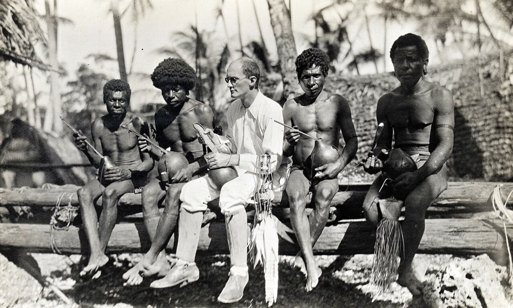
Fig. 161918 年，马林诺夫斯基（中间穿白衣者）与特罗布里恩群岛的居民在一起。照片作者不详，可能是当地的珍珠商人 Billy Hancock。写作部分的范本是马林诺夫斯基的《西太平洋上的航海者》（1922），写新几内亚东边特罗布里恩群岛的「库拉」（Kula）交换圈。弗雷泽为它写的序里说，如果抛开行动者的思维去描述一系列行为，就无法真正理解社会人；马林诺夫斯基的研究「将人看作一个圆形而非平面」。
课件把民族志写作拆成四个要素，每个都配了书里的一段：
描写：细节与血肉。 第一次见到特罗布里恩人时，马林诺夫斯基写他们浅色的皮肤、结实而笨重的体形和某种柔弱的气质；面孔宽阔肥胖，鼻子塌陷，眼睛下垂，「看起来多一分古怪有趣，少一分凶狠野蛮」；头发不像纯巴布亚人那么卷，而是像大拖把一样散开。他们举止羞怯，却不乏友善，常常面露笑容，和巴布亚人的愁眉不展、迈卢人或阿罗马人的退缩怀疑都不一样。最后一句很妙：「与其说是桀骜不驯的野蛮人，不如说是自鸣得意的资产阶级。」（今天读这段，也能读出其中殖民时代凝视的味道。）
叙事：过程与行动。 锡纳卡塔的船队沿着堡礁向南航行。如果没有一早出发（「拖拉是土著人生活的特色」），他们就要在小沙洲上过夜：在白沙滩上、露兜树下生火，煮甘薯和捡来的海鸟蛋，围着篝火聊库拉。「他们现在暂时栖身于一个狭窄的沙洲上，远离家乡，面前是一条长路，而他们把命运寄托在这颤巍巍的独木舟身上。」
规则：抽象与结构。 库卢图拉是卢瓦斯斯加氏族的一个分支，在远航中拥有一切优先权：造船的每个阶段它先完成，第二天别人才能跟进；下水时它前一天下，第二天才轮到酋长和平民的船；航行时谁也不能超过它，到了沙洲或中间站它先停泊、先上岸扎营；到了戈亚最远的目的地，它的人最先上岸、最先接受「异邦人」的礼物，还要把收到的槟榔在船头敲碎，这是一种礼仪。但回程时，它又回到本来较低的地位。优先权只在库拉远航这个仪式性的时空里有效。
自我：田野感受与反思。 在最后一章「库拉的意义」里，马林诺夫斯基先说「孤立的事实，无论怎样新奇动人，对科学都没有价值」，科学和猎奇的区别在于把事实整合进一个系统；然后写下了他自己的动机：
研究土著人最令我感兴趣的，是他对事物的看法、他的世界观、他所呼吸的生命气息和他生活在其中的现实。每一个文化都给它的成员某种确定的世界观、某种确定的对生命的热情。漫步人类历史，游历世界各地，最令我入迷的是能够从不同的、为某文化所独有的角度体谅生命和世界，并由此激励我深入探究其他文化，理解其他类型的生活。
这一讲的小结有两句：「对人的关怀和探究」，以及「写作在研究中的角色」。后一句我的理解是，写作不是田野结束以后才开始的誊抄，从研究日记的第一行起，它就在决定我们看见什么、追问什么。期中作业是一篇 3000 字左右的民族志非虚构写作，步骤是田野调查或文献调查、研究日记、民族志文本，要素是对研究对象的描述、对田野过程的叙述，以及分析和反思。看来上面那四个要素和三层日记都得用上了。
回头看第二讲的标题「人类学家：志异文本的现代作者」，这一讲正好把它补全了：民族志是一种写作，写作就有笔法、有立场，也有作者自己。马林诺夫斯基写出了一个「圆形」的特罗布里恩，但那也是他的特罗布里恩。
§ 08小结：五讲之后
回头看，五讲各有一个关键词：
- 第一讲是形态：神话存在于文献、口头、仪式和实物之间，并且不断在它们之间转写。西王母从甲骨上的「西母」一路走到天池景区导游口中。
- 第二讲是作者：神话学家也是神话的书写者。闻一多在民族危亡之际用伏羲和龙讲出了一个同源共祖的中国，这本身就是一次现代的「神话制作」。
- 第三讲是结构：神、鬼、祖先映照着官员、陌生人、亲属。民间宗教用帝国的语言组织社会，也在模仿中保留了偏离帝国的可能。
- 第四讲是实践：在白云山，神话被「做」出来。道士的醮仪和信众的迎会共用一座山、一张日程表，一个签筒为四个省区预测收成。
- 第五讲是书写：田野材料从来不是中性的，记录要一丝不苟，写作要把人写成「圆形」，也要把自己写进去。
把这些关键词连起来，我对「神话」的理解有了变化。它不是一个等待被考证真伪的「原始故事」，而是一种社会用来讲述自身、安排秩序的方式。蒋观云说的「植字」，闻一多说的「活动动机之口供」，王斯福说的「隐喻」，兰色姆说的「人为的形式」，说的大概都是这件事。而研究神话的人，也在用民族志给它添上新的一层。
接下来几讲是神话与历史、认知与想象、神话与图像。期中还要交一篇民族志，也许可以真的去一趟庙会：看看今天的人们是怎样一边烧着金纸，一边继续「制造」神话的。
参考与图片来源
主要参考
- 梁君健：《神话学》课程第一至五讲课件（2026 年秋）。
- 闻一多：《伏羲考》，田兆元导读，上海古籍出版社。
- 茅盾：《中国神话研究 ABC》，上海世界书局，1929。
- 王斯福：《帝国的隐喻：中国民间宗教》，赵旭东译，江苏人民出版社，2008。
- 芮逸夫：《苗族的洪水故事与伏羲女娲的传说》，《人类学集刊》第一卷第一期，1938。
- Arthur P. Wolf, "Gods, Ghosts, and Ancestors," in Religion and Ritual in Chinese Society, Stanford University Press, 1974.
- G. William Skinner, "Marketing and Social Structure in Rural China," Journal of Asian Studies, 1964–1965.
- William Bascom, "The Forms of Folklore: Prose Narratives," Journal of American Folklore, 1965.
- 吴新锋、刘蓓：《西王母神话在旅游语境中的转化——以天山天池景区为例》，《徐州工程学院学报（社会科学版）》，2023 年第 3 期。
- 顾颉刚编：《妙峰山》，国立中山大学语言历史学研究所，1928；奉宽：《妙峰山琐记》，顾颉刚序。
- 李慰祖：《四大门》，北京大学出版社，2011（据 1941 年燕京大学学士论文整理）。
- 岳永逸：《精神性存在的让渡：旧京的庙会与庙市》；《灵验·磕头·传说：民众信仰的阴面与阳面》。
- 鞠熙：《狐仙故事与北京城的宇宙论意义》；《游观入道：作为自我修行的女性朝山——以明清碧霞元君信仰为例》。
- 吴效群：《妙峰山：北京民间社会的历史变迁》；孙庆忠编：《妙峰山：香会组织的传承与处境》。
- 杨念群：《北京地区「四大门」信仰与「地方感觉」——兼论京郊「巫」与「医」的近代角色之争》。
- 斯宾塞（Walter Baldwin Spencer）致弗雷泽书信，1903 年 7 月 24 日、8 月 27 日（据第五讲课件引文）。
- Susan Naquin, Gods of Mount Tai: Familiarity and the Material Culture of North China, 1000–2000.
- 马林诺夫斯基：《西太平洋上的航海者》（Argonauts of the Western Pacific, 1922），弗雷泽序。
图片来源
- 西王母龙虎座图拓片：Wikimedia Commons，公有领域。
- 《山海经》西王母插图：Wikimedia Commons，公有领域。
- 东汉西王母画像砖（四川大学博物馆藏）、沙坪坝石棺画像摹本、闻一多速写《大风洞观音堂》、李氏祖先群像与关公众神图：截取自课程课件，仅作学习笔记引用。
- 高更《Ia Orana Maria》：Wikimedia Commons / The Met，CC0。
- 闻一多像：Wikimedia Commons，公有领域。
- 阿斯塔那《伏羲女娲图》：Wikimedia Commons，公有领域。
- 甘多尔菲《塞勒涅与恩底弥翁》：Wikimedia Commons，公有领域。
- 明代《吕洞宾像》（费城艺术博物馆藏）：Wikimedia Commons，公有领域。
- 施坚雅市场模型示意图：本文自绘。
- 白云观远景、白云山夜间神坛、纸扎「值使者」：梁君健摄，截取自第四讲课件，仅作学习笔记引用。
- 马林诺夫斯基在特罗布里恩群岛（1918）：Wikimedia Commons，公有领域。


评论